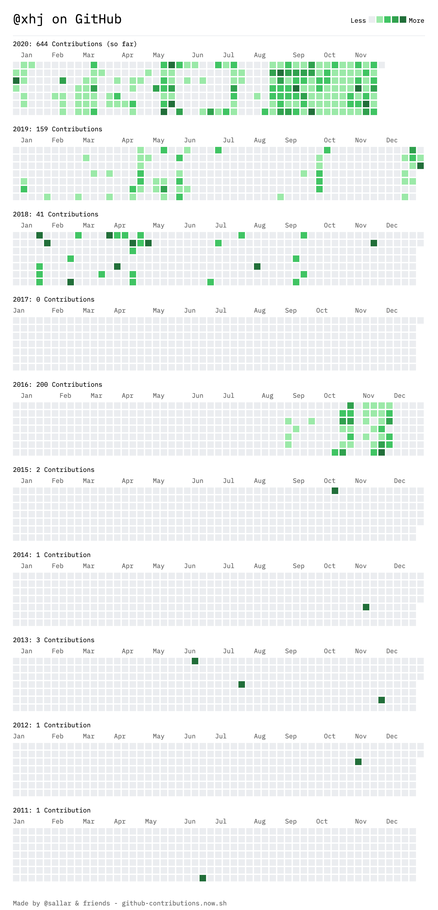
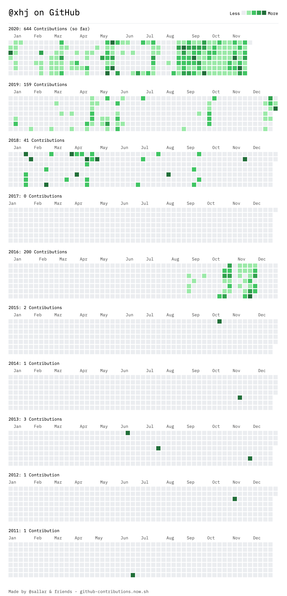

地铁站都比你努力
2020-11-22
这几天一直在浏览谢益辉的个人网站，在一篇文章中看到一个生成github瓷砖图的工具，点进去输入自己的用户名一看，真是惨不忍睹，完全白瞎了自己三个字母的用户名。

虽然这些年来一直是把混日子作为自己苟且偷生的唯一收入来源，但是在混日子的日子中什么都不做就完全说不过去了，所以看了看上面的瓷砖图，觉得自己接受再多折辱都是应得的。
时至今日，横向超越他人是不太可能的了，只能试试纵向战胜自己。
把人生过成一本书
这几天一直在浏览谢益辉的个人网站，在一篇文章中看到一个生成github瓷砖图的工具，点进去输入自己的用户名一看，真是惨不忍睹，完全白瞎了自己三个字母的用户名。

虽然这些年来一直是把混日子作为自己苟且偷生的唯一收入来源，但是在混日子的日子中什么都不做就完全说不过去了，所以看了看上面的瓷砖图，觉得自己接受再多折辱都是应得的。
时至今日，横向超越他人是不太可能的了，只能试试纵向战胜自己。